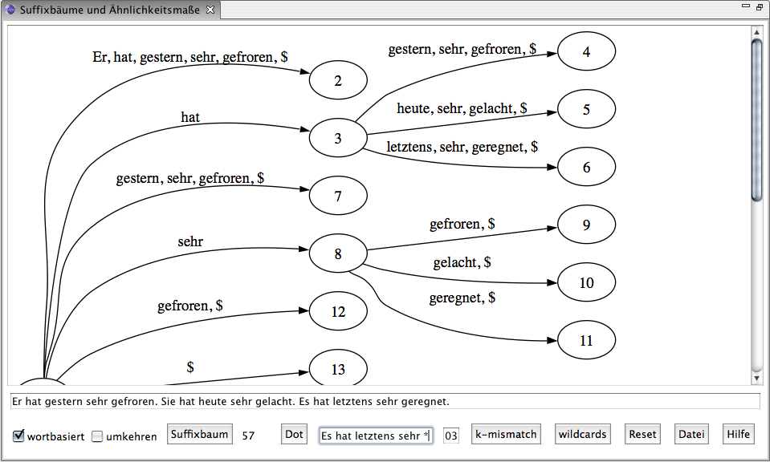

Browse the Subversion
repository
Sourceforge Project Site
(download and more)
Coursework on suffix trees
and appr. matching (german)

This is a Java API for using suffix trees for natural language and an Eclipse/SWT-based GUI for suffix tree visualization using GraphViz. Suffix trees are an efficient and versatile, yet not widely known and used data structure, up to now mainly used for string processing in bioinformatics, only very sporadically for natural language processing. See "Dan Gusfield: Algorithms on Strings, Trees and Sequences" for a description of what can be accomplished with suffix trees.
Using the API, word-based suffix trees can be constructed in linear runtime (based on the algorithm described by Anderssen et al. and the implementation UkkonenSuffixTree.java from the BioJava API). The tree can be build for the entire input text or as a generalized suffix tree for all the sentences in the input text. Constructed trees can be exported to the graph representation language dot (used by GraphViz). There are implementations of the algorithms for matching with k-mismatch and wildcards as described in Gusfield 1997:196f. and experimental implementations of constant-time LCA-retrieval (based on implementations by A.G. McDowell). Besides the efficient implementation there are also naive suffix tree implementations for use with smaller data sets (used by the GUI). For usage details see the javadoc documentation.
The GUI allows for construction and visualization of suffix trees for entered text or a specified text file. It also offers visualization of the implemented matching algorithms. From the text entered or specified, a suffix tree is constructed and exported to the dot format. When visualizing a small text, now the dot application is called to render the suffix tree as an image file, which can be saved to disk. Options that can be specified in the GUI include constructing the suffix tree either for the words or for the chars in the input and building a suffix tree for the reversed input text (to visualize paradigms at the beginning of sentences). For details, see the included instructions.

This site was created on 2006-05-21 and las modified on
2006-06-06 by
Fabian Steeg
Linguistic Information
Processing - Department
of Linguistics - University of
Cologne